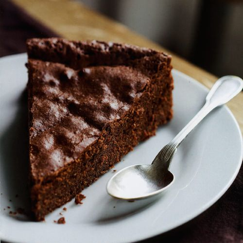

Chocolade taart
Ingrediënten
- 200g pure chocolade
- 200g boter
- 4 eieren
- 150g fijne tafelsuiker
- 60g bloem
- ½ pakje bakpoeder
Bereidingswijze
- Verwarm de oven voor op 200 graden celcius.
- Laat de chocolade met de boter smelten in de magnetron of au bain-marie.
- Klop de eieren met de fijne tafelsuiker tot het mengsel lichtgeel van kleur is. Klop er dan losjes de bloem en het bakpoeder door.
- Meng de twee mengsels door elkaar en giet over in de met boter ingevette en met bloem bestoven bakvorm.
- Bak 20-25 minuten in de oven. De taart moet na die tijd in het midden net gaar zijn.
- Neem de taart uit de oven. Laat de taart eerst een kwartiertje afkoelen voor je hem uit de vorm stort.
